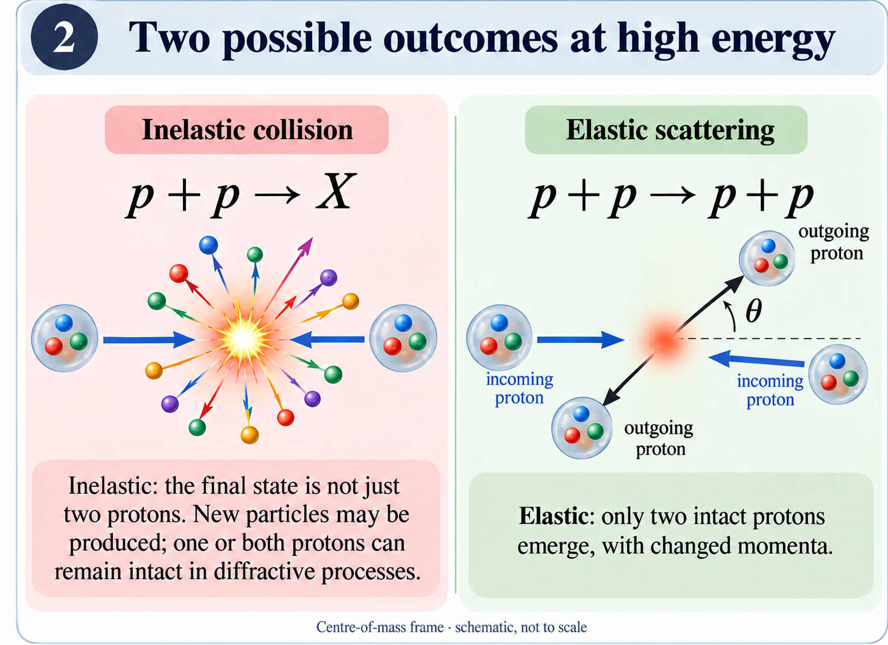
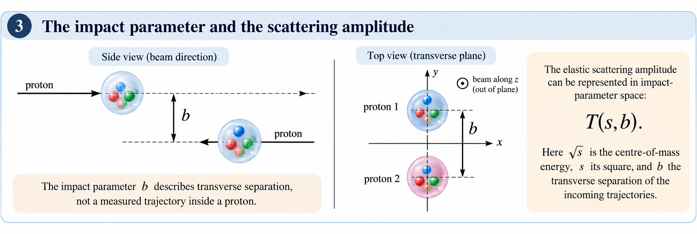

Two protons can collide at the LHC and emerge as two protons. Their identities have not changed, but their momenta have. That small change is the starting point of my research on elastic scattering.
I study how the interaction changes with collision energy. If a model describes elastic scattering at one energy, can we evolve its amplitude to another energy, while respecting the constraints of quantum mechanics? This first article introduces the experimental and geometrical ideas behind that question. The next articles will develop the nonlinear evolution equation and its relation to my published work.
1. What the three-quark picture tells us
A proton has valence content \(uud\): two up quarks and one down quark. Their charges add to the proton’s charge, \(2/3+2/3-1/3=1\), in units of the elementary charge. This statement fixes net quark content; it does not mean that a proton contains only three particles.
In quantum chromodynamics (QCD), quarks interact through gluons. Gluons also interact with one another, and the proton’s quantum state includes quark–antiquark contributions, usually called the sea. The number and distribution of partons—quarks, antiquarks and gluons—depend on the resolution at which the proton is probed.
The drawing below is a guide to these ingredients, not a photograph of objects inside a rigid sphere. In particular, its colours are illustrative and do not identify QCD colour charges.

Higher collision energy opens access to partons carrying smaller fractions \(x\) of a proton’s longitudinal momentum. This is one reason high-energy scattering connects to small-\(x\) physics. Increasing energy and increasing spatial resolution are nevertheless different operations: a high-energy collision can still involve a small momentum transfer and long-distance strong-interaction physics.
2. Elastic does not mean no interaction
In elastic scattering, the final state contains the same two protons and no additional particles:
In the centre-of-mass frame, each outgoing proton has the same energy as before the collision, but a different momentum direction. At the small momentum transfers considered here, the deflection angles are tiny.
An inelastic event has a different final state, which we can write as \(p+p\to X\), with \(X\neq pp\). Many such events produce numerous particles. But “inelastic” does not require both protons to break apart: diffractive reactions can leave one proton intact, or even both if additional particles are produced. The distinction is the complete final state, not simply whether a proton survives. [1]

3. What a tiny deflection measures
The change in a proton’s four-momentum is described by
Here \(p\) denotes a four-momentum, not the particle symbol in the reaction above. With the metric convention \((+,-,-,-)\), elastic scattering has \(t\leq0\); the forward limit is \(t=0\). Measurements are therefore usually plotted against \(|t|\).
The differential elastic cross section, \(d\sigma_{\mathrm{el}}/dt\), describes how the elastic event rate is distributed in momentum transfer after accounting for the luminosity of the colliding beams. A cross section has units of area, but it is not a literal photograph of the proton’s outline.
At LHC energies, the measured distribution falls steeply in the forward hadronic region, then reaches a diffractive minimum, the dip, followed by a secondary maximum, the bump. For example, TOTEM measured the dip near \(|t|=0.47\,\mathrm{GeV}^2\) at \(\sqrt{s}=13\,\mathrm{TeV}\). This gives us a concrete feature that a scattering model must reproduce. At extremely small \(|t|\), electromagnetic scattering and its interference with the strong amplitude must also be included. [2]
Technical note · Angle, amplitude and the dip
In units with \(c=1\), for centre-of-mass momentum magnitude \(p_{\mathrm{cm}}\),
In a dominant-amplitude description, \(d\sigma_{\mathrm{el}}/dt\propto|A(s,t)|^2\), with a prefactor set by the amplitude convention. More generally one sums and averages over spin amplitudes. A dip probes a minimum of this intensity; it is not a direct measurement of a hole in a spatial density. The real and imaginary parts both matter, and a measured modulus alone does not determine their relative phase.
4. The same interaction in the transverse plane
Imagine viewing the incoming beams along their axis. Their transverse separation is the impact parameter, \(b\). Small \(b\) describes approximately central geometry; larger \(b\) describes more peripheral geometry. This is a useful high-energy representation, not an event-by-event measurement of two classical proton trajectories.

The elastic amplitude can be represented as \(T(s,b)\). The variable \(s=(p_1+p_2)^2\) is the square of the centre-of-mass energy: the collider energy quoted as “13 TeV” is \(\sqrt{s}\), not \(s\).
The momentum-transfer amplitude \(A(s,t)\) and the impact-parameter profile \(T(s,b)\) are related by a Fourier transform in the transverse plane. They describe the same interaction in different variables. The profile helps us ask where in transverse space the interaction is strong, while the momentum-transfer distribution is what experiments measure.
Technical note · What the Fourier transform does—and does not—give us
At high energy and small scattering angles, \(t\simeq-\boldsymbol q_{\perp}^{\,2}\). Schematically, suppressing convention-dependent normalisation factors,
For azimuthal symmetry the transform reduces to a Fourier–Bessel integral with kernel \(J_0(b\sqrt{|t|})\). One transforms the complex amplitude, not the cross section. Reconstructing a profile from data therefore requires information or assumptions about the phase, as well as the unmeasured momentum-transfer regions. The resulting interaction profile is not the proton’s electromagnetic charge density.
5. My question: how does the amplitude evolve?
Suppose a phenomenological model supplies an initial profile \(T(s_0,b)\). Instead of fitting an unrelated profile at every energy, I want an evolution law that connects these descriptions:
One can then transform the evolved amplitude back to momentum-transfer space and compare its predictions with measured cross sections. The initial profile remains an input: an evolution equation does not remove the uncertainty of the starting model.
The physical constraint is unitarity: probabilities summed over all possible outcomes must add to one. An elastic amplitude is complex and is not itself a probability. Its allowed values are constrained by the elastic and inelastic channels together. [4]
6. Growth, saturation and the next step
A useful distinction is between the interaction strength at a fixed impact parameter and the transverse area over which the interaction is appreciable. Local saturation can coexist with a growing total cross section if that area expands with energy. Unitarity does not say that the total cross section must tend to a constant.
Technical note · A local probability constraint
In the high-energy impact-parameter description, let \(S(s,b)\) be the elastic-channel S-matrix element. Summing over the other channels gives
This expresses the local unitarity constraint. Relating \(S\) to \(T\) requires an amplitude convention; no numerical saturation value for \(T\) is implied here. Unitarity restricts an evolution law, but does not uniquely select the logistic equation or a particular asymptotic limit.
The next article begins with the real logistic equation,
For positive coefficients and positive initial data, its linear term drives growth and its quadratic term limits it. We will first understand that balance, then examine what changes when the evolving variable is a complex scattering amplitude. In an energy-evolution problem, the relevant evolution variable is related to a logarithm such as \(Y=\ln(s/s_0)\), not ordinary laboratory time.
The analogy is a way into the mathematics. Establishing the physical equation requires its field-theory assumptions, its initial conditions and comparison with data.
Sources and further reading
- ALICE Collaboration, Measurement of inelastic, single- and double-diffraction cross sections in proton–proton collisions at the LHC, Eur. Phys. J. C 73, 2456 (2013).
- TOTEM Collaboration, Elastic differential cross-section measurement at √s = 13 TeV by TOTEM, Eur. Phys. J. C 79, 861 (2019). Experimental reference for the dip–bump structure.
- A. K. Kohara, Complex logistic equation for universal energy evolution in hadronic elastic scattering, Phys. Rev. D 113, 116041 (2026).
- Particle Data Group, High Energy Soft QCD and Diffraction. Background on amplitudes, unitarity and diffractive processes.
Illustrations are schematic, not experimental images. Adapted from the author’s supplied illustrations with AI-assisted editing.